Laporan Modul 3: Laravel Controller
Mata Kuliah: Workshop Web Lanjut
Nama: Faizul Abrar
NIM: 2024573010103
Kelas: TI-2C
Abstrak
Laporan ini membahas penerapan Controller pada framework Laravel 12 dalam konteks arsitektur Model-View-Controller (MVC). Tujuan dari praktikum ini adalah untuk memahami peran controller sebagai penghubung antara model dan view, serta bagaimana controller mengatur logika aplikasi, menangani request pengguna, dan mengembalikan response yang sesuai. Melalui tiga percobaan praktikum — menangani request dan response, penggunaan route grouping, serta penerapan prefix dan namespace — mahasiswa diharapkan mampu membangun struktur aplikasi web yang lebih terorganisir, efisien, dan mudah dikembangkan. Hasil akhir dari praktikum ini menunjukkan bahwa controller berperan penting dalam mengelola alur data dan tampilan aplikasi secara terstruktur di Laravel.
1. Dasar Teori
- Apa Itu Controller
Dalam pola MVC (Model-View-Controller), sebuah controller bertindak sebagai jembatan antara model dan view. Controller menangani input pengguna, berinteraksi dengan model untuk data, dan mengembalikan respons yang benar, yang seringkali merender sebuah view.
- Jelaskan fungsi utama Controller dalam arsitektur MVC pada Laravel.
Controller berfungsi sebagai penghubung antara Model dan View. Ia menangani logika bisnis aplikasi, menerima permintaan (request) dari pengguna melalui route, memproses data menggunakan model (jika diperlukan), dan mengirimkan hasilnya ke view untuk ditampilkan.
- Sebutkan dan jelaskan tiga jenis controller yang ada di Laravel.
- Basic Controllers (Controller Dasar)
- Resource Controllers (Controller Sumber Daya)
- Invokable Controllers (Controller yang Dapat Dipanggil)
2. Langkah-Langkah Praktikum
Tuliskan langkah-langkah yang sudah dilakukan, sertakan potongan kode dan screenshot hasil.
2.1 Praktikum 1 – Menangani Request dan Response View di laravel 12
-
Langkah 1 : Buat Dan Buka Proyek Laravel
composer create-project laravel/laravel:^12.0.3 lab-view
cd lab-view
code .
-
Langkah 2: Buat sebuah Controller
php artisan make:controller DemoController
Kemudian isi dengan kode berikut:

-
Langkah 3: Definisikan Rute
Edit routes/web.php:
Kemudian Isi Dengan Code Berikut

-
Langkah 4: Buat View Sederhana
Buat file Blade berikut di resources/views/:
Hello.blade.php
Greet.blade.php
Search.blade.php


 Screenshot Hasil:
Screenshot Hasil:
-
Hasil Hello.blade.php

-
Hasil Greet.blade.php

-
Hasil Search.blade.php

2.2 Praktikum 2 – Menggunakan Group Route
-
Langkah 1 : Buat Dan Buka Proyek Laravel'
composer create-project laravel/laravel:^12.0.3 lab-group
cd lab-group
code .
-
Langkah 2 : Buat Sebuah Controller
php artisan make:controller PageController
Kemudian Isi Dengan Code Berikut :
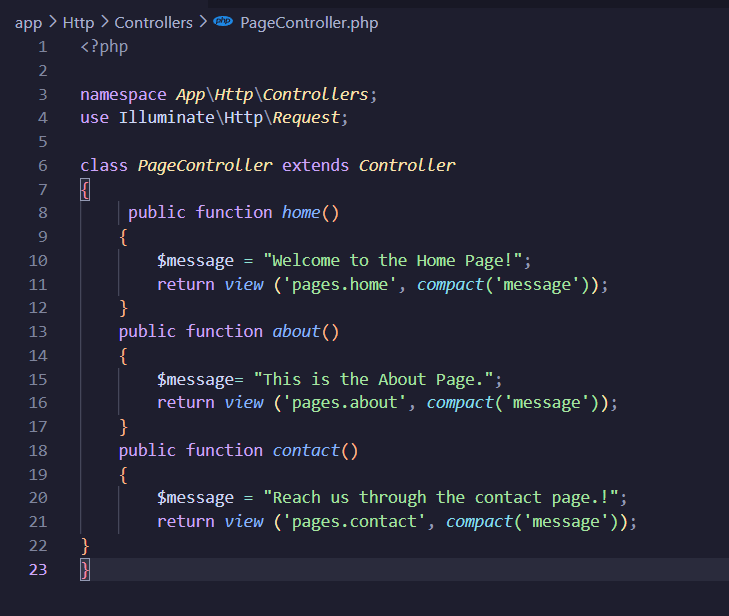
-
Langkah 3 : Definisikan Rute Yang Dikelompokan
Kemudian Isi Dengan Code Berikut :
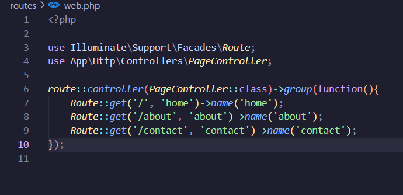
-
Langkah 4 : Buat View Sederhana
-Buat Folder : resources/views/pages/
-Selanjutnya Buat File - Filr Berikut Di dalam Pages/
- Home.blade.php
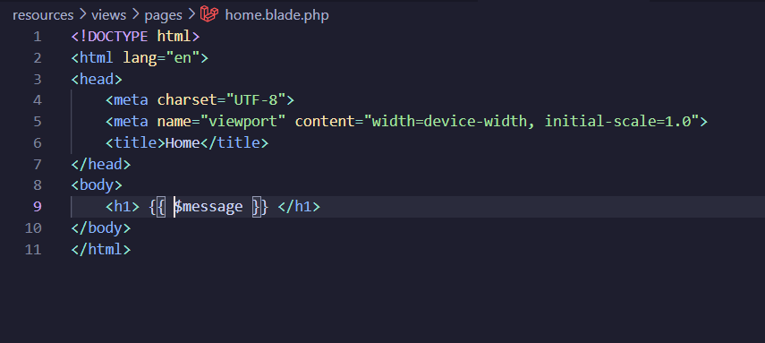
- about.blade.php
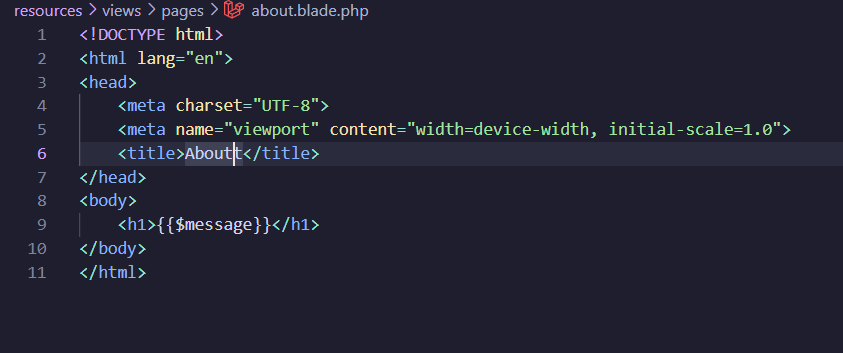
3.contact.blade.php
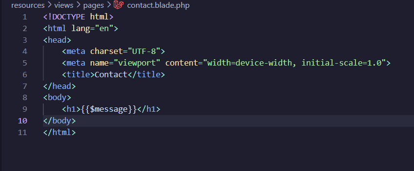
Screenshot Hasil:
HasilHome
.png)
HasilAbout
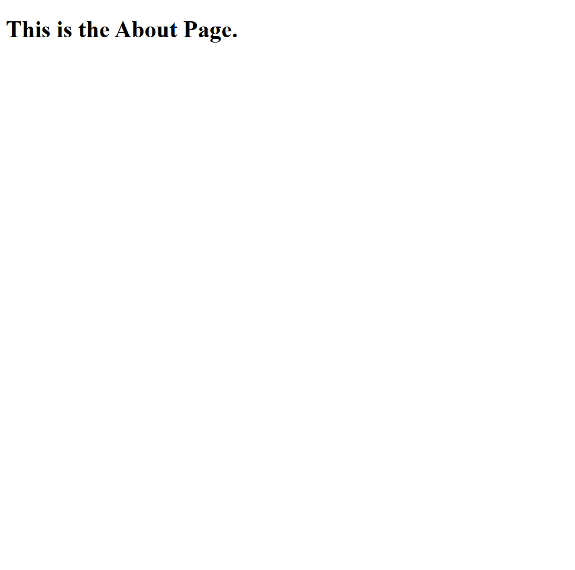
HasilContact
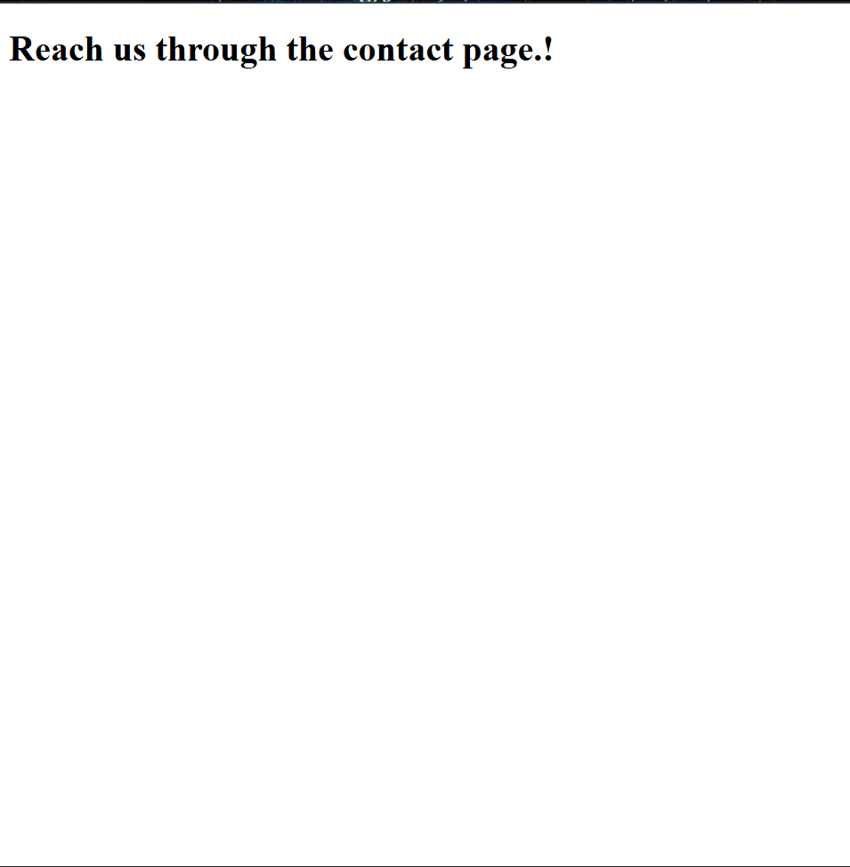
2.3 Praktikum 3 – Pengelompokan Prefix Dengan NameSpace Rute Di Laravel 12
Langkah 1: Buar Dan Buka Proyek Laravel
composer create-project laravel/laravel:^12.0.3 lab-prefix
cd lab-prefix
code .
Langkah 2: Buat Controller Dengan NameSpace
- php artisan make:controller Admin/DashboardController
- php artisan make:controller Admin/UserController
Langkah 3: Definisikan Kelompok Rute Dengan Prefix Dan NameSpace Controller
Kemudian Isi Dengan Code Berikut
Langkah 4: Tambahkan Aksi Ke Controller
Kemudian Isi Dengan Code Berikut Untuk DashboardController.php
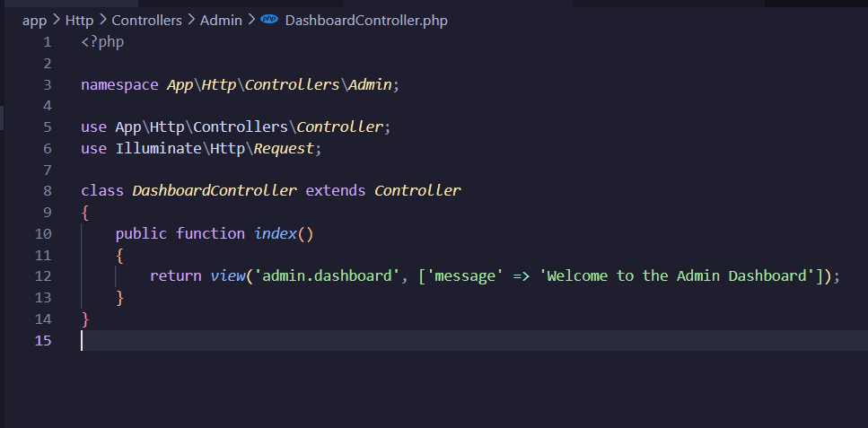
Selanjutnya Isi Code Berikut Untuk UsersController.php
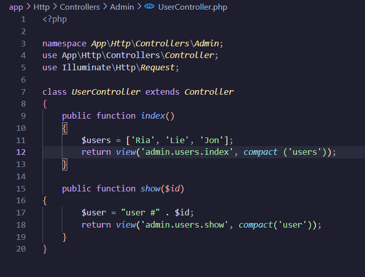
Langkah 5:
Buat View Sederhana
Buat folder dan file di bawah resources/views/admin/. Kemudian, buat file-file berikut:
- dashboard.blade.php
- users/index.blade.php
Isi Code Berikut pada Dashboard.blade.php
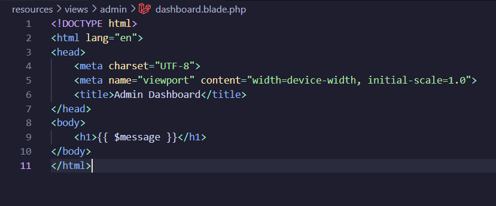
Selanjutnya membuat folder users di bawah resources/views/admin/ dan buat file index.blade.php di dalamnya. View users/index.blade.php adalah file HTML sederhana yang menampilkan daftar pengguna:
Kemudian Isi Dengan code berikut
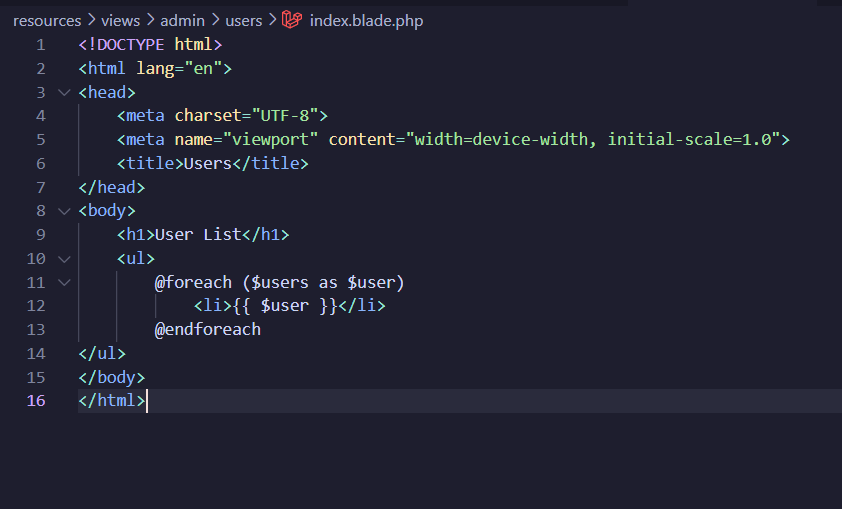
Selanjutnya Bikin Show.blade.php
isi dengan code berikut
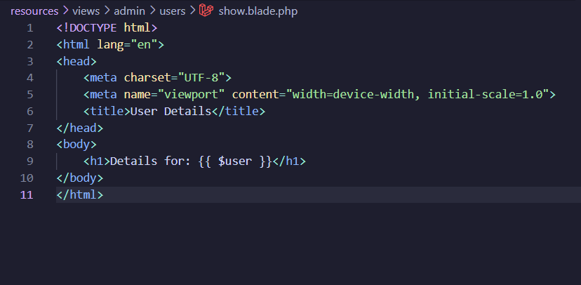
Screenshot Hasil:
-
Hasil Admin Dashboard
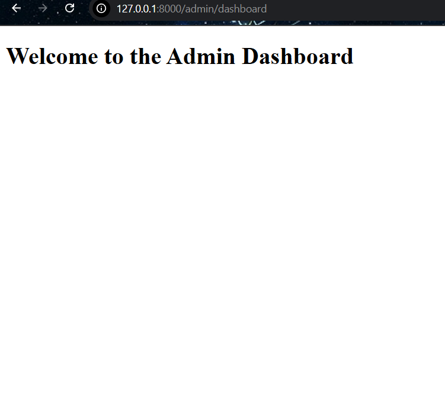
-
Hasil Admin Users
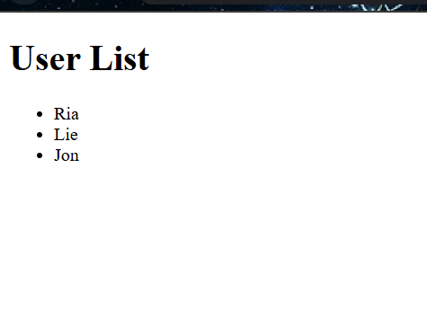
-
Hasil Users Detail
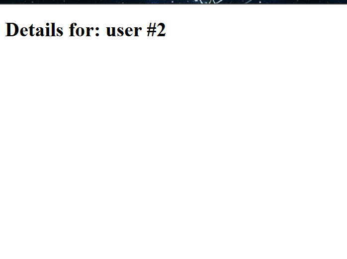
3. Hasil dan Pembahasan
Jelaskan apa hasil dari praktikum yang dilakukan.
Pada praktikum ini telah dibuat beberapa controller di Laravel untuk menangani request dan menampilkan view.
- Praktikum 1: DemoController berhasil menampilkan halaman hello, greet, dan search sesuai route.
- Praktikum 2: Menggunakan Route Group dengan PageController, halaman home, about, dan contact tampil dengan baik dan struktur route lebih rapi.
- Praktikum 3: Penerapan prefix dan namespace berhasil memisahkan area admin (DashboardController dan UserController) dari user biasa, dengan hasil tampilan dashboard dan daftar user yang sesuai.
Secara keseluruhan, controller berfungsi menghubungkan route, logika aplikasi, dan tampilan secara terstruktur.
4. Kesimpulan
Dari hasil praktikum Modul 3 tentang Laravel Controller, dapat disimpulkan bahwa controller memiliki peran utama sebagai penghubung antara route, model, dan view dalam arsitektur MVC Laravel. Melalui tiga percobaan yang dilakukan, mahasiswa berhasil memahami bagaimana controller digunakan untuk:
Menangani request dan response antara pengguna dan tampilan.
Mengelompokkan route menggunakan group dan prefix agar struktur kode lebih rapi dan mudah dikelola.
Menerapkan namespace untuk memisahkan logika antara area admin dan user.
Dengan penerapan tersebut, aplikasi menjadi lebih terorganisir, efisien, dan mudah dikembangkan.
Secara keseluruhan, praktikum ini menunjukkan bahwa pemahaman dan penggunaan controller yang tepat sangat penting dalam membangun aplikasi web berbasis Laravel yang modular dan terstruktur.
5. Referensi
- https://hackmd.io/@mohdrzu/H1sB73dnxg
- https://www.w3schools.in/laravel